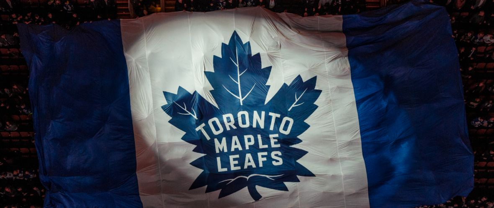

These are my interests!
I love playing the drums even though I have not been able to for years, because I've been renting and its just to loud for neighbours.
After that I would have to say I love learning about space and other unkown things such as ufos or ghosts, anything that I can speculate on and try to figure out.
Playing chess with my fiance Lauren is always a great time, even though she kicks my butt almost always.
I think my true interest is technology! I get really excited about new developments with smartphones,computers, especially A.I.!


Other interests of mine..
- Hockey - born a Leafs fan!
- Music
- Reading
- Gaming
- Trucks/cars
I could probably continue, but I'm sure you get the picture :).